|
When creating links to CMap, you can set a number of options to control how the data is displayed. To illustrate each option, a summary and its affect on the image follows. Here is the starting image: |
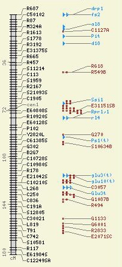 |
| Argument | Description | Image |
|---|---|---|
| ref_map_start: | The starting position for the reference map. If not supplied, then the start position as defined for the map will be used. The map to the right was restricted with an argument of "20" for the start of the reference map. | 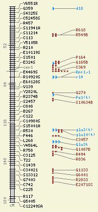 |
| ref_map_stop: | The stop position for the reference map. If not supplied, then the stop position as defined for the map will be used. Here the map was cut off at "100." | 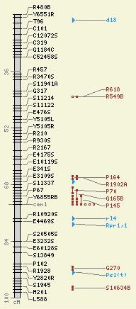 |
| highlight: | A comma- or space-delimited string of features to highlight on the maps. You can provide either the feature's primary name, alternate name, or accession ID. If you wish to use a name with an embedded space, then enclose the name in double quotes. In the image, the two features were highlighted using an accession ID and a feature name. | 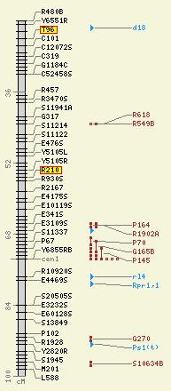 |
| image_size: | This controls the overall height of the image (and is also configurable via "cmap.conf"), it is a string containing one of either "small," "medium," or "large." Here the image is shown at the "large" setting. | 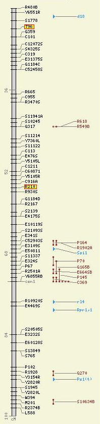 |
| font_size: | This controls the size of the font used in the image and is a string containing one of either "small," "medium," or "large." In the image to the right, both the "image size" and "font size" are set to "large." | 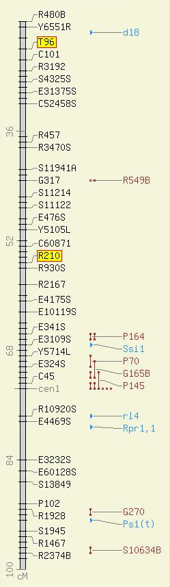 |
| image_type: | This controls the output type of the image. By default, only "gif" and "png" are expected, but the choices are limited only to how you compile libgd on your system. | No image |
| label_features: |
This controls what labels are displayed on the map. The choices
and their effect are as follows:
The image to the right show no labels. |
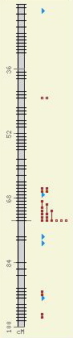 |
| And here it is with the argument "landmarks": | 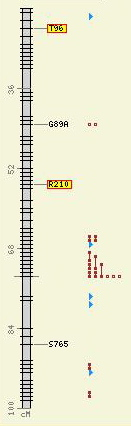 | |
| collapse_features | A "1" ("Yes") or "0" ("No") indicating whether or not to collapse features of the same type with the same coordinates into one glyph (handy if many spanning features would make the maps excessively wide). In this image, some of the brown dumbbells were collapsed. | 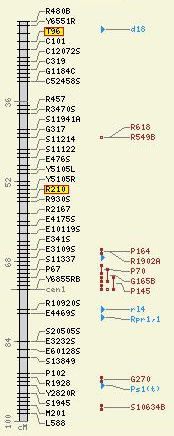 |
| min_correspondences |
An integer describing the minimum number of correspondences
required to be present between any two maps (not just to the
reference map). This is an especially handy feature to use when
displaying a reference map and many relational map when you wish
to exclude those relational maps with few correspondences.
Here is the reference map alongside some relational maps: |
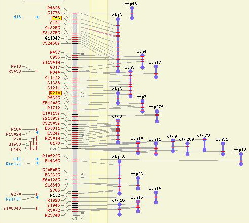 |
| And here is the map when insisting on at least "5" correspondences from the the contigs to the reference map -- those with fewer are excluded from the view altogether. | 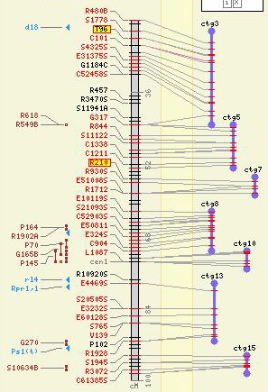 | |
| feature_types | A comma-separated list of feature type accession IDs to use in limiting the types of features displayed on the maps. In the image to the right, only features of type "marker" are allowed. | 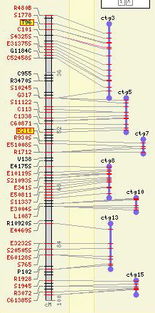 |
| evidence_types | A comma-separated list of correspondence evidence accession IDs to use in limiting the correspondences displayed on the maps. Here the correspondence evidence types have been restricted to just those based on "insilico analysis." | 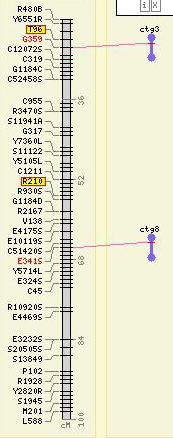 |